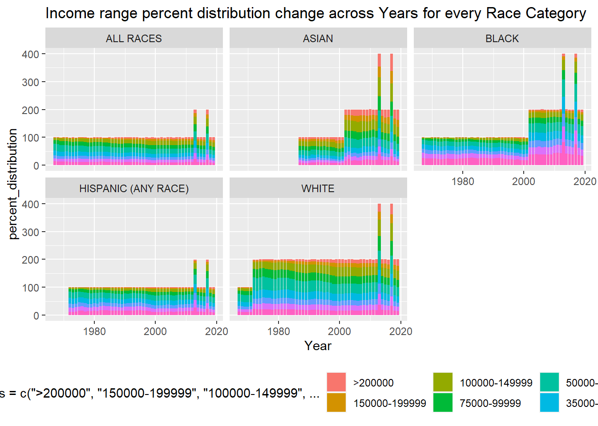

read in a data set, and describe the data set using both words and any supporting information (e.g., tables, etc)
tidy data (as needed, including sanity checks)
mutate variables as needed (including sanity checks)
create at least one graph including time (evolution)
try to make them “publication” ready (optional)
Explain why you choose the specific graph type
Create at least one graph depicting part-whole or flow relationships
try to make them “publication” ready (optional)
Explain why you choose the specific graph type
R Graph Gallery is a good starting point for thinking about what information is conveyed in standard graph types, and includes example R code.
(be sure to only include the category tags for the data you use!)
Read in data
Read in one (or more) of the following datasets, using the correct R package and command. - usa_hh ⭐⭐⭐
#! label: Data loadingUS_household_data <-read_excel("../posts/_data/USA Households by Total Money Income, Race, and Hispanic Origin of Householder 1967 to 2019.xlsx",skip =5, n_max =353, col_names =c( "Year", "Number","Total","pd_<15000","pd_15000-24999","pd_25000-34999","pd_35000-49999","pd_50000-74999","pd_75000-99999","pd_100000-149999","pd_150000-199999","pd_>200000","median_income_estimate","median_income_moe","mean_income_estimate","mean_income_moe"))head(US_household_data,5)
# A tibble: 5 × 16
Year Number Total pd_<1…¹ pd_15…² pd_25…³ pd_35…⁴ pd_50…⁵ pd_75…⁶ pd_10…⁷
<chr> <chr> <dbl> <dbl> <dbl> <dbl> <dbl> <dbl> <dbl> <dbl>
1 ALL RACES <NA> NA NA NA NA NA NA NA NA
2 2019 128451 100 9.1 8 8.3 11.7 16.5 12.3 15.5
3 2018 128579 100 10.1 8.8 8.7 12 17 12.5 15
4 2017 2 127669 100 10 9.1 9.2 12 16.4 12.4 14.7
5 2017 127586 100 10.1 9.1 9.2 11.9 16.3 12.6 14.8
# … with 6 more variables: `pd_150000-199999` <dbl>, `pd_>200000` <dbl>,
# median_income_estimate <dbl>, median_income_moe <dbl>,
# mean_income_estimate <chr>, mean_income_moe <chr>, and abbreviated variable
# names ¹`pd_<15000`, ²`pd_15000-24999`, ³`pd_25000-34999`,
# ⁴`pd_35000-49999`, ⁵`pd_50000-74999`, ⁶`pd_75000-99999`,
# ⁷`pd_100000-149999`
# ℹ Use `colnames()` to see all variable names
Briefly describe the data
Tidy Data (as needed)
The US household data is anything but tidy. Here are the following few operations that have been performed to make it tidy: 1. Separating Race and Year from one column 2. Mutating dataframe to include race column 3. Removing trailing character from both race and column 4. Converting Number and Year Numerical columns from character to number. 5. pivoting percent distribution into 2 columns[income_Range and percent_distribution] from 9 different income range feature of data . 6. Grouped multi sub + common races into more generic races
#! label: Data processingUS_processed_data <- US_household_data%>%rowwise()%>%#to ensure the following operation runs row wisemutate(Race=case_when(is.na(Number) ~ Year ))%>%ungroup()%>%# to stop rowwise operationfill(Race,.direction ="down")%>%subset(!is.na(Number))%>%rowwise()%>%mutate(Year=strsplit(Year,' ')[[1]][1],Race=ifelse(grepl("[0-9]", Race ,perl=TRUE)[1],strsplit(Race," \\s*(?=[^ ]+$)",perl=TRUE)[[1]][1],Race),mean_income_estimate=as.numeric(mean_income_estimate),Number=as.numeric(Number),Year=as.numeric(Year),CombinedRace=case_when(str_detect(Race,"ASIAN")~"ASIAN",str_detect(Race,"BLACK")~"BLACK",str_detect(Race,"WHITE")~"WHITE",TRUE~ Race ) )%>%pivot_longer(cols =starts_with("pd"),names_to ="income_range",values_to ="percent_distribution",names_prefix="pd_" )view(dfSummary(US_processed_data))
Time Dependent Visualization
#!label: Time dependent visualizationtime_viz<-ggplot(US_processed_data,aes(x=Year,y=percent_distribution,fill=factor(income_range, levels=c(">200000","150000-199999","100000-149999","75000-99999","50000-74999","35000-49999","25000-34999","15000-24999","<15000"))))+geom_bar(position="stack",stat="identity")+facet_wrap(vars(CombinedRace))+theme(legend.position ="bottom")+labs(title="Income range percent distribution change across Years for every Race Category")time_viz

This above graph shows the change in income range percentage distribution for multiple years. The total stacked value should be 100 but there are multiple places where for a year it is going beyond 100, this means there are multiple data for that Race, Year group. We need to sanitise the data. This graph was chosen to efficiently convey the change in income distribution for mulitple races across multiple years.
Further work that i need help with: eliminate redundant Data. Increase facet_wrap size Fix the legend and wrap text
Visualizing Part-Whole Relationships
alluvial_viz<-ggplot(US_processed_data,aes(axis1=CombinedRace,axis2=income_range,y=percent_distribution))+geom_alluvium(aes(fill=CombinedRace))+geom_stratum()+geom_stratum(aes(fill = CombinedRace))+geom_text(stat ="stratum",size=3,aes(label =after_stat(stratum)))+theme_void()+labs(title="Income range distribution across different races")
Error in geom_alluvium(aes(fill = CombinedRace)): could not find function "geom_alluvium"
alluvial_viz
Error in eval(expr, envir, enclos): object 'alluvial_viz' not found
The above plot shows a Part-whole visualization using flow data. I wanted to analyse the percent distribution trend to the income range across multiple races. The alluvial graph is the most intuitive and creative due to its unique relational mapping. Due to its relational mapping aesthetics made me choose this.
Source Code
---title: "Challenge 6"author: "Animesh Sengupta"description: "Visualizing Time and Relationships"date: "08/23/2022"format: html: toc: true code-copy: true code-tools: truecategories: - challenge_6 - usa_hh - Animesh Sengupta---```{r}#| label: setup#| warning: false#| message: falselibrary(tidyverse)library(ggplot2)library(summarytools)library(plotly)library(stringr)library(ggalluvial)library(readxl)knitr::opts_chunk$set(echo =TRUE, warning=FALSE, message=FALSE)```## Challenge OverviewToday's challenge is to:1) read in a data set, and describe the data set using both words and any supporting information (e.g., tables, etc)2) tidy data (as needed, including sanity checks)3) mutate variables as needed (including sanity checks)4) create at least one graph including time (evolution) - try to make them "publication" ready (optional) - Explain why you choose the specific graph type5) Create at least one graph depicting part-whole or flow relationships - try to make them "publication" ready (optional) - Explain why you choose the specific graph type[R Graph Gallery](https://r-graph-gallery.com/) is a good starting point for thinking about what information is conveyed in standard graph types, and includes example R code.(be sure to only include the category tags for the data you use!)## Read in dataRead in one (or more) of the following datasets, using the correct R package and command. - usa_hh ⭐⭐⭐```{r}#| warning: false#! label: Data loadingUS_household_data <-read_excel("../posts/_data/USA Households by Total Money Income, Race, and Hispanic Origin of Householder 1967 to 2019.xlsx",skip =5, n_max =353, col_names =c( "Year", "Number","Total","pd_<15000","pd_15000-24999","pd_25000-34999","pd_35000-49999","pd_50000-74999","pd_75000-99999","pd_100000-149999","pd_150000-199999","pd_>200000","median_income_estimate","median_income_moe","mean_income_estimate","mean_income_moe"))head(US_household_data,5)```### Briefly describe the data## Tidy Data (as needed)The US household data is anything but tidy. Here are the following few operations that have been performed to make it tidy:1. Separating Race and Year from one column2. Mutating dataframe to include race column3. Removing trailing character from both race and column4. Converting Number and Year Numerical columns from character to number.5. pivoting percent distribution into 2 columns[income_Range and percent_distribution] from 9 different income range feature of data .6. Grouped multi sub + common races into more generic races```{r}#| warning: false#! label: Data processingUS_processed_data <- US_household_data%>%rowwise()%>%#to ensure the following operation runs row wisemutate(Race=case_when(is.na(Number) ~ Year ))%>%ungroup()%>%# to stop rowwise operationfill(Race,.direction ="down")%>%subset(!is.na(Number))%>%rowwise()%>%mutate(Year=strsplit(Year,' ')[[1]][1],Race=ifelse(grepl("[0-9]", Race ,perl=TRUE)[1],strsplit(Race," \\s*(?=[^ ]+$)",perl=TRUE)[[1]][1],Race),mean_income_estimate=as.numeric(mean_income_estimate),Number=as.numeric(Number),Year=as.numeric(Year),CombinedRace=case_when(str_detect(Race,"ASIAN")~"ASIAN",str_detect(Race,"BLACK")~"BLACK",str_detect(Race,"WHITE")~"WHITE",TRUE~ Race ) )%>%pivot_longer(cols =starts_with("pd"),names_to ="income_range",values_to ="percent_distribution",names_prefix="pd_" )view(dfSummary(US_processed_data))```## Time Dependent Visualization```{r}#| warning: false#!label: Time dependent visualizationtime_viz<-ggplot(US_processed_data,aes(x=Year,y=percent_distribution,fill=factor(income_range, levels=c(">200000","150000-199999","100000-149999","75000-99999","50000-74999","35000-49999","25000-34999","15000-24999","<15000"))))+geom_bar(position="stack",stat="identity")+facet_wrap(vars(CombinedRace))+theme(legend.position ="bottom")+labs(title="Income range percent distribution change across Years for every Race Category")time_viz```This above graph shows the change in income range percentage distribution for multiple years. The total stacked value should be 100 but there are multiple places where for a year it is going beyond 100, this means there are multiple data for that Race, Year group. We need to sanitise the data. This graph was chosen to efficiently convey the change in income distribution for mulitple races across multiple years.Further work that i need help with:eliminate redundant Data.Increase facet_wrap sizeFix the legend and wrap text## Visualizing Part-Whole Relationships```{r}#| warning: false#| label: Part-whole Visualizationalluvial_viz<-ggplot(US_processed_data,aes(axis1=CombinedRace,axis2=income_range,y=percent_distribution))+geom_alluvium(aes(fill=CombinedRace))+geom_stratum()+geom_stratum(aes(fill = CombinedRace))+geom_text(stat ="stratum",size=3,aes(label =after_stat(stratum)))+theme_void()+alluvial_viz```The above plot shows a Part-whole visualization using flow data. I wanted to analyse the percent distribution trend to the income range across multiple races. The alluvial graph is the most intuitive and creative due to its unique relational mapping. Due to its relational mapping aesthetics made me choose this.